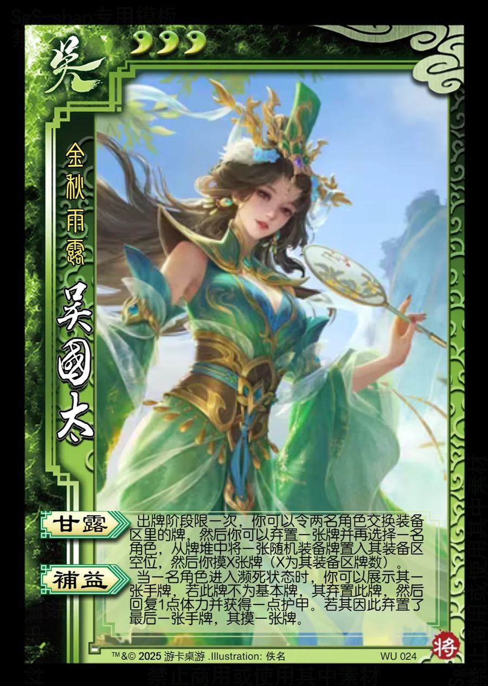

点击卡面查看大图
吴
吴国太
♥3金秋雨露
甘露
出牌阶段限一次，你可以令两名角色交换装备区里的牌，然后你可以弃置一张牌并再选择一名角色，从牌堆中将一张随机装备牌置入其装备区空位，然后你摸X张牌（X为其装备区牌数）。
补益
当一名角色进入濒死状态时，你可以展示其一张手牌，若此牌不为基本牌，其弃置此牌，然后回复1点体力并获得一点护甲。若其因此弃置了最后一张手牌，其摸一张牌。

点击卡面查看大图
金秋雨露
出牌阶段限一次，你可以令两名角色交换装备区里的牌，然后你可以弃置一张牌并再选择一名角色，从牌堆中将一张随机装备牌置入其装备区空位，然后你摸X张牌（X为其装备区牌数）。
当一名角色进入濒死状态时，你可以展示其一张手牌，若此牌不为基本牌，其弃置此牌，然后回复1点体力并获得一点护甲。若其因此弃置了最后一张手牌，其摸一张牌。